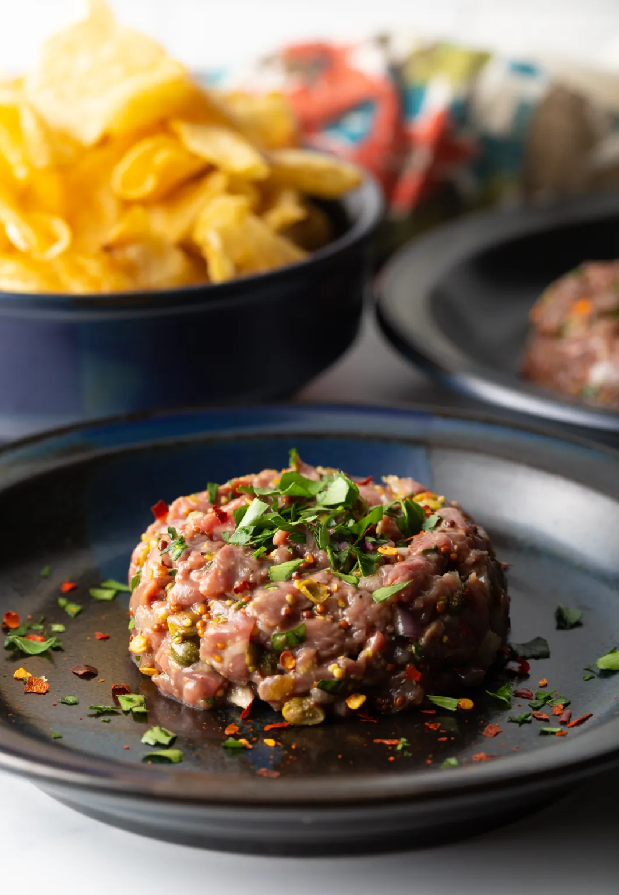

Steak Tartare
Ingredients
- Beef filets – use high-quality meat, preferably from the butcher counter
- Shallots – minced (or sweet onion)
- Onion
- Capers – minced (or minced cornichons)
- Egg yolk – save the white in an airtight container in the fridge for up to 3 days to cook with
- Spicy whole grain mustard – or a 50/50 combo of whole grain mustard and Dijon mustard
- Fresh parsley – chopped
- Olive oil – or other preferred neutral-tasting oil
- Lemon – zested and juiced
- Seasonings – salt and pepper
Steps
- First, make sure that your steak is nice and cold. You can even put the meat (sealed properly) in the freezer for a few minutes to get chilled.
- SThen, trim the excess fat chunks off of the steaks and finely chop the filets with a sharp knife into ¼ inch pieces.
- Now mince the shallots and capers. Zest and juice the lemon. In a measuring cup, add the egg yolk, lemon juice, and spicy mustard.
- Stir to combine.
- Next, set out a large mixing bowl. Add the chopped steak, minced shallots and capers, egg yolk/mustard/lemon mixture, parsley, olive oil, lemon zest, 1 teaspoon salt, and ½ teaspoon cracked black pepper.
- Taste, then add additional salt, pepper, or lemon juice if desired.
- Mix well. BUT BE GENTLE. You just want to incorporate the ingredients, not mush them together.
- Serve the Steak Tartare immediately. You can briefly refrigerate to get a slight chill, but only for about 15 minutes before you eat.